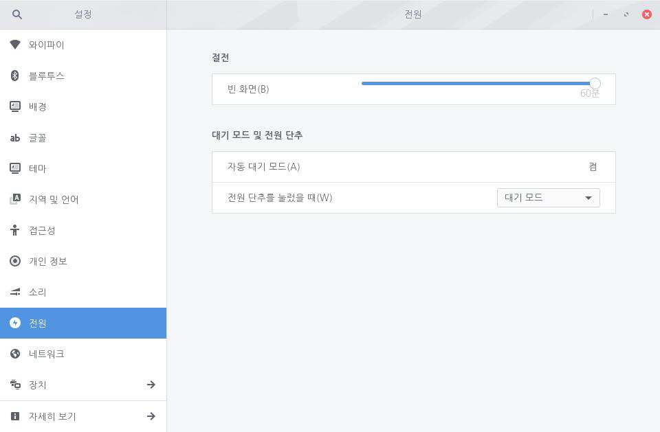

사용자 입력이 없을 때 화면이 절전 모드로 전환되는 시간을 설정하여 전원 낭비를 막을 수 있습니다. 슬라이더의 흰 원을 좌우로 옮겨 시간을 설정할 수 있으며, 최소 1분부터 최대 60분까지 설정할 수 있습니다. 흰 원을 왼쪽 맨 끝으로 옮기면 절전 모드가 해제됩니다. 다음 단계를 수행하여 화면 절전 모드를 설정합니다.1. 좌측 하단의 [시작]아이콘을 클릭하고 검색 창에 "설정"을 입력한 후 [설정] 애플리케이션을 실행합니다.
 2. [설정] 애플리케이션 사이드 바에서 [전원]을 클릭합니다.
2. [설정] 애플리케이션 사이드 바에서 [전원]을 클릭합니다.
3. [빈 화면] 슬라이더의 흰 원을 좌우로 옮겨 절전 모드 시간을 설정할 수 있습니다. 최소 1분부터 최대 60분까지 설정할 수 있습니다. 흰 원을 왼쪽 맨 끝으로 옮기면 절전 모드가 해제됩니다.